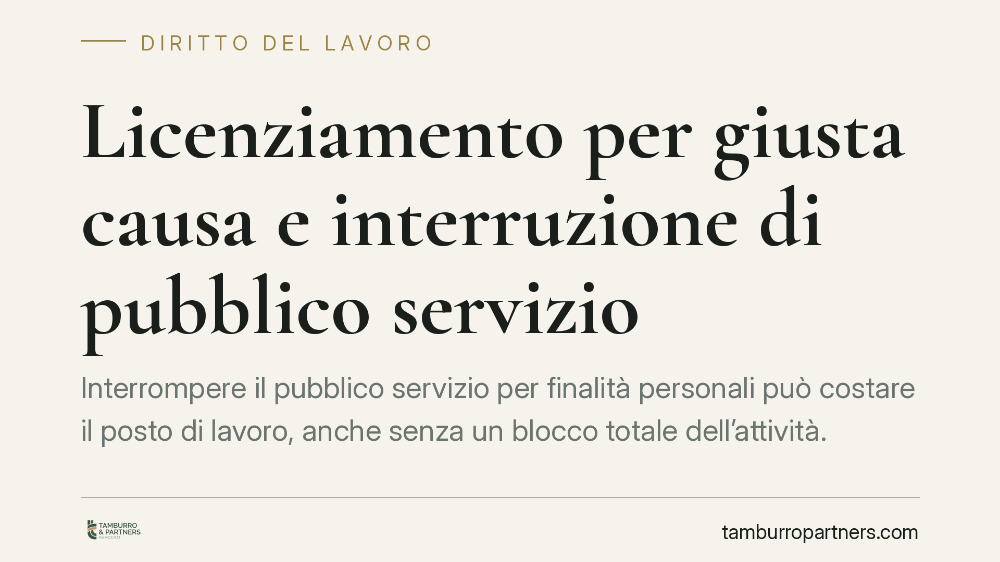
Licenziamento per giusta causa e interruzione di pubblico servizio
Interrompere il pubblico servizio per finalità personali può costare il posto di lavoro, anche senza un blocco totale dell'attività. Lo ribadisce la Corte di Cassazione, che valori…
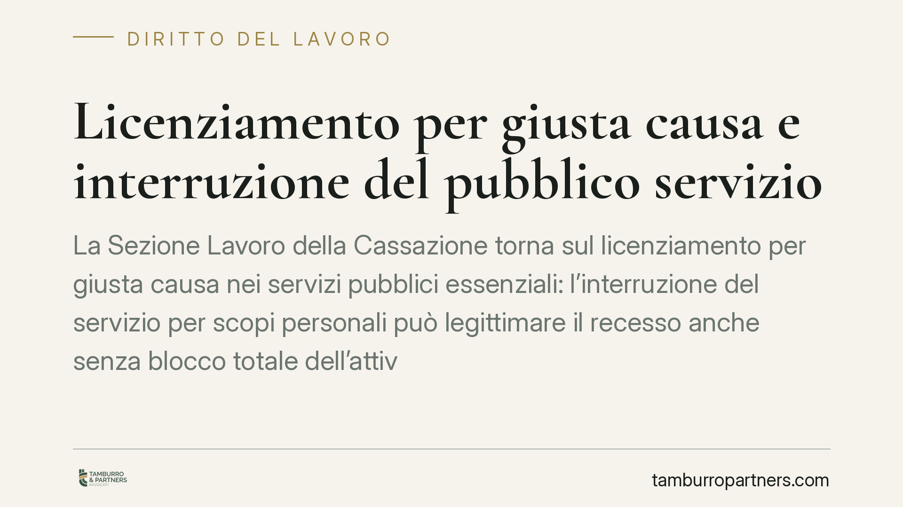
Licenziamento per giusta causa e interruzione del pubblico servizio
La Sezione Lavoro della Cassazione torna sul licenziamento per giusta causa nei servizi pubblici essenziali: l'interruzione del servizio per scopi personali può legittimare il rece…
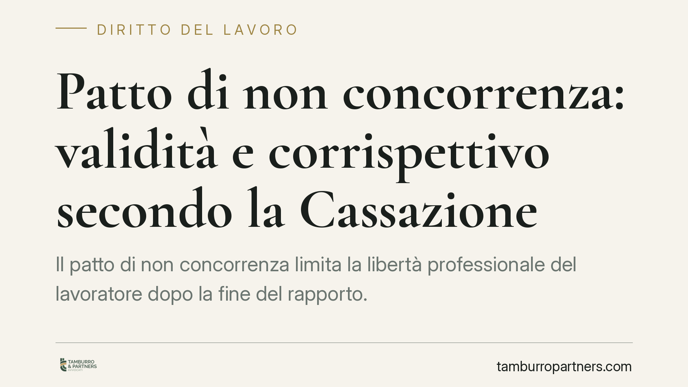
Patto di non concorrenza: validità e corrispettivo secondo la Cassazione
Il patto di non concorrenza limita la libertà professionale del lavoratore dopo la fine del rapporto. La Corte di Cassazione ha più volte ribadito che, senza un corrispettivo congr…
Patto di non concorrenza: quando è valido e quanto deve essere pagato
Il patto di non concorrenza vincola il lavoratore anche dopo la fine del rapporto, limitandone l'attività futura. La Cassazione ha ribadito che senza un corrispettivo adeguato e li…
Cambio mansioni nel pubblico impiego: quando è demansionamento
Un dipendente pubblico spostato a compiti diversi lamenta un demansionamento. La Cassazione ribadisce che, nel pubblico impiego, conta l'equivalenza formale tra le mansioni stabili…
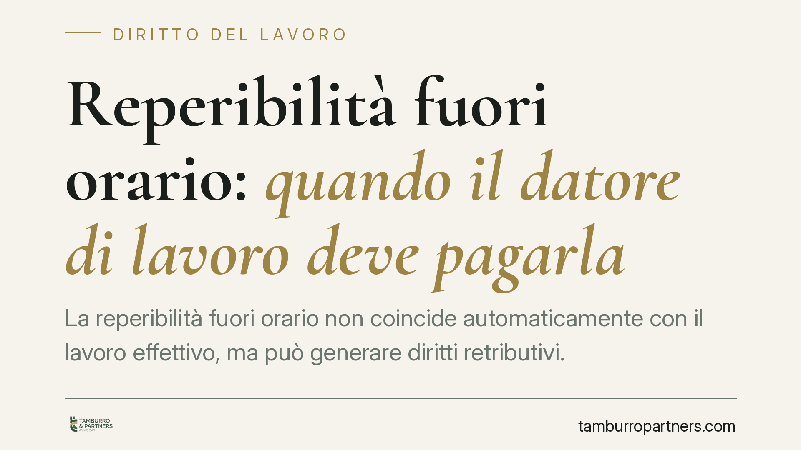
Reperibilità fuori orario: quando il datore di lavoro deve pagarla
La reperibilità fuori orario non coincide automaticamente con il lavoro effettivo, ma può generare diritti retributivi. La differenza tra restare a disposizione e intervenire davve…
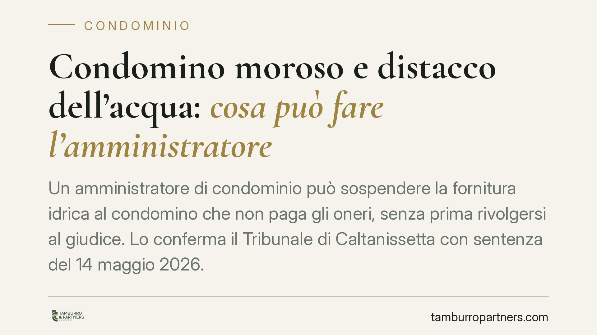
Condomino moroso e distacco dell'acqua: cosa può fare l'amministratore
Un amministratore di condominio può sospendere la fornitura idrica al condomino che non paga gli oneri, senza prima rivolgersi al giudice. Lo conferma il Tribunale di Caltanissetta…
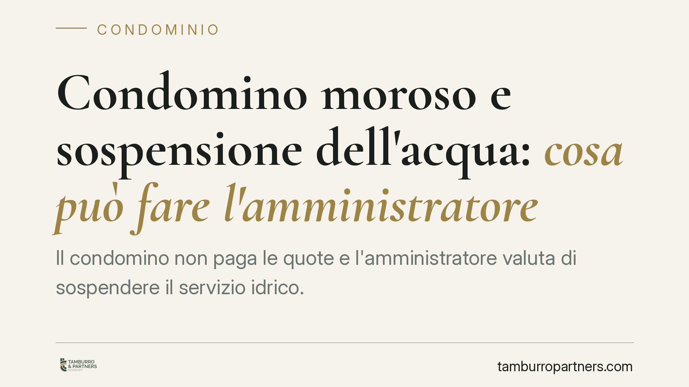
Condomino moroso e sospensione dell'acqua: cosa può fare l'amministratore
Il condomino non paga le quote e l'amministratore valuta di sospendere il servizio idrico. Una recente pronuncia del Tribunale di Caltanissetta conferma che la sospensione è possib…
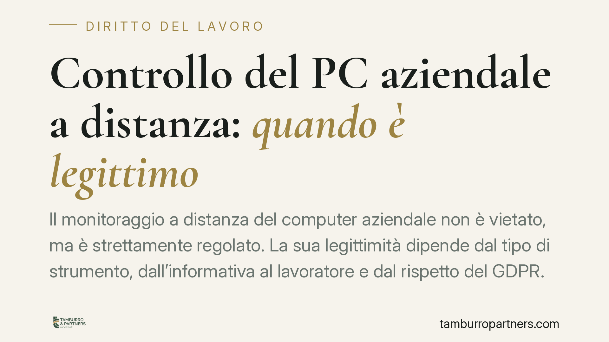
Controllo del PC aziendale a distanza: quando è legittimo
Il monitoraggio a distanza del computer aziendale non è vietato, ma è strettamente regolato. La sua legittimità dipende dal tipo di strumento, dall'informativa al lavoratore e dal …
Malattia da lavoro: chi prova il danno per ottenere il risarcimento
Chi si ammala a causa del lavoro e chiede il risarcimento deve provare la nocività dell'ambiente e il legame con la patologia. Il datore, a sua volta, deve dimostrare di aver adott…
Trasferimento di sede peggiorativo: per la CGUE è licenziamento collettivo
La Corte di giustizia dell'Unione europea ha stabilito che un trasferimento di sede unilaterale e sostanzialmente peggiorativo, tale da costringere il dipendente a dimettersi, può …
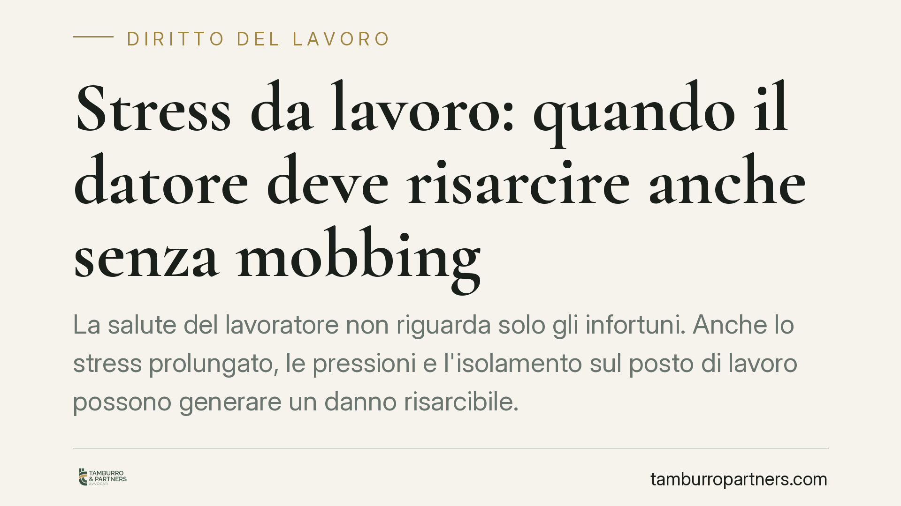
Stress sul lavoro e risarcimento: quando è dovuto anche senza mobbing
Il datore di lavoro risponde dei danni alla salute psicofisica del dipendente anche quando non c'è mobbing. La Cassazione, applicando l'art. 2087 del Codice civile, riconosce il ri…
Straordinari non pagati: il datore può obbligarmi?
Capita di sentirsi chiedere ore in più senza vederle in busta paga. La legge è chiara: il lavoro straordinario va retribuito con maggiorazione o compensato con riposo. La gratuità …
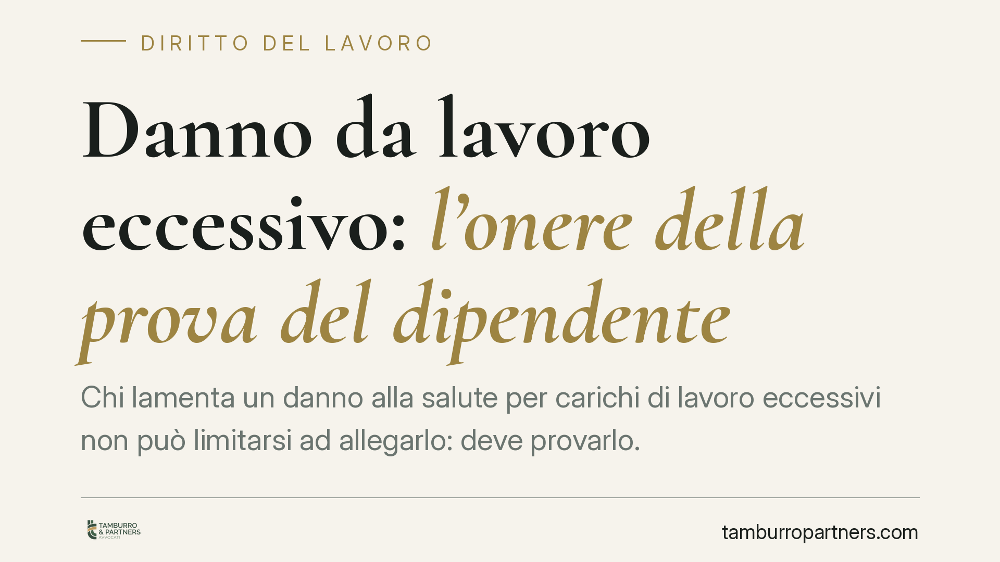
Danno da lavoro eccessivo: l'onere della prova per il dipendente
La Cassazione Sezione Lavoro conferma un principio dirimente: chi chiede il risarcimento per un carico di lavoro eccessivo deve provare il danno subito, la nocività delle condizion…
Straordinari non pagati: il datore può obbligarmi?
Molti lavoratori si chiedono se siano tenuti a restare oltre l'orario senza compenso. La risposta, alla luce del D.Lgs. 66/2003, è netta: lo straordinario va sempre retribuito o co…
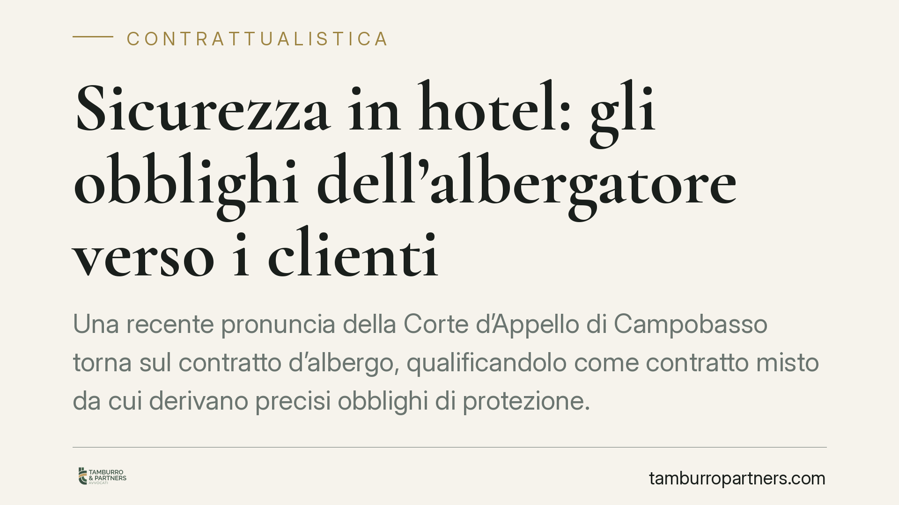
Sicurezza in hotel: gli obblighi dell'albergatore verso i clienti
Una recente pronuncia della Corte d'Appello di Campobasso torna sul contratto d'albergo, qualificandolo come contratto misto da cui derivano precisi obblighi di protezione. L'alber…
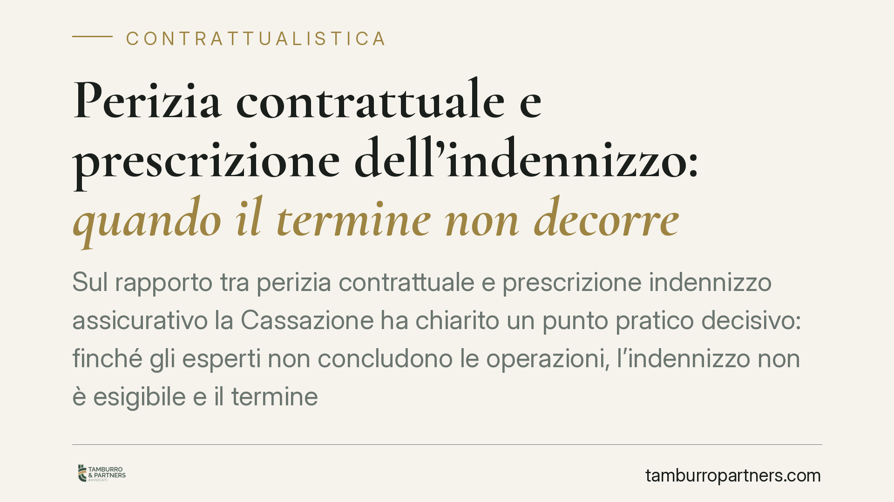
Perizia contrattuale e prescrizione dell'indennizzo: quando il termine non decorre
Sul rapporto tra perizia contrattuale e prescrizione indennizzo assicurativo la Cassazione ha chiarito un punto pratico decisivo: finché gli esperti non concludono le operazioni, l…
Nuovo contratto Funzioni centrali: aumenti, AI e nuove tutele
È stato sottoscritto il nuovo contratto collettivo per le Funzioni centrali del pubblico impiego, che interessa oltre 204.000 dipendenti. L'accordo prevede un incremento retributiv…
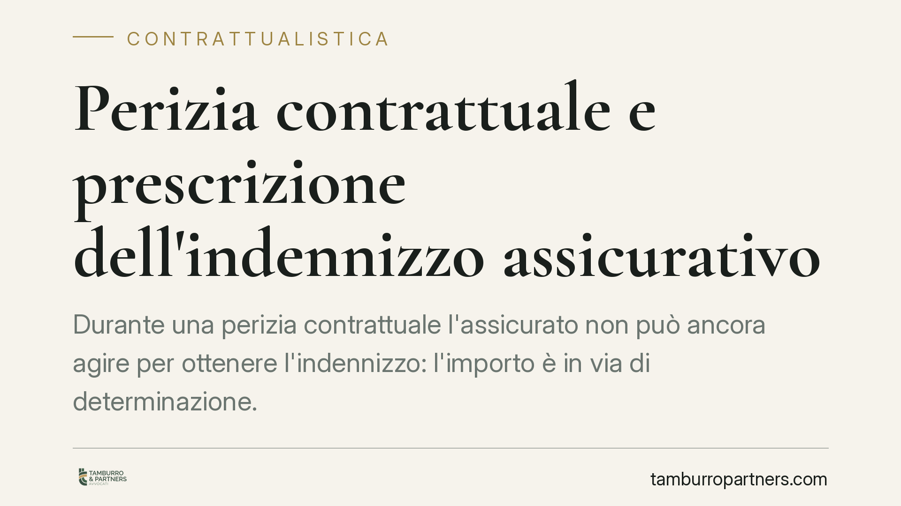
Perizia contrattuale e prescrizione dell'indennizzo assicurativo
Durante una perizia contrattuale l'assicurato non può ancora agire per ottenere l'indennizzo: l'importo è in via di determinazione. La Cassazione ha chiarito che, in questo interva…
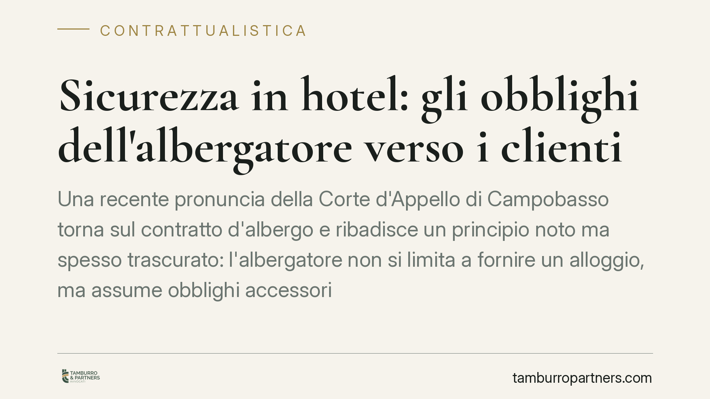
Sicurezza in hotel: gli obblighi dell'albergatore verso i clienti
Una recente pronuncia della Corte d'Appello di Campobasso torna sul contratto d'albergo e ribadisce un principio noto ma spesso trascurato: l'albergatore non si limita a fornire un…
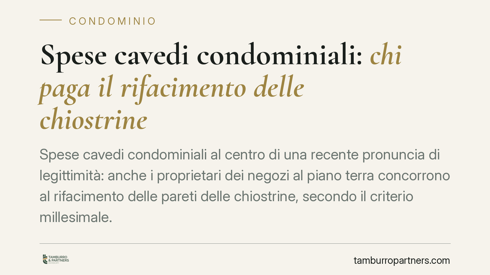
Spese cavedi condominiali: chi paga il rifacimento delle chiostrine
Spese cavedi condominiali al centro di una recente pronuncia di legittimità: anche i proprietari dei negozi al piano terra concorrono al rifacimento delle pareti delle chiostrine, …
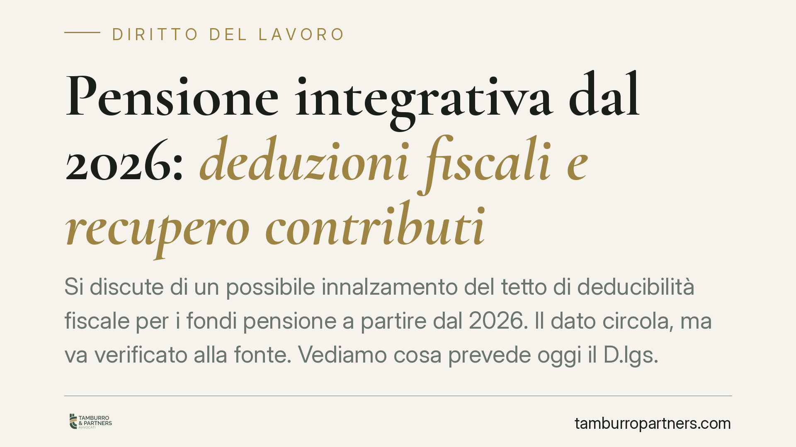
Pensione integrativa dal 2026: deduzioni fiscali e recupero contributi
Si discute di un possibile innalzamento del tetto di deducibilità fiscale per i fondi pensione a partire dal 2026. Il dato circola, ma va verificato alla fonte. Vediamo cosa preved…
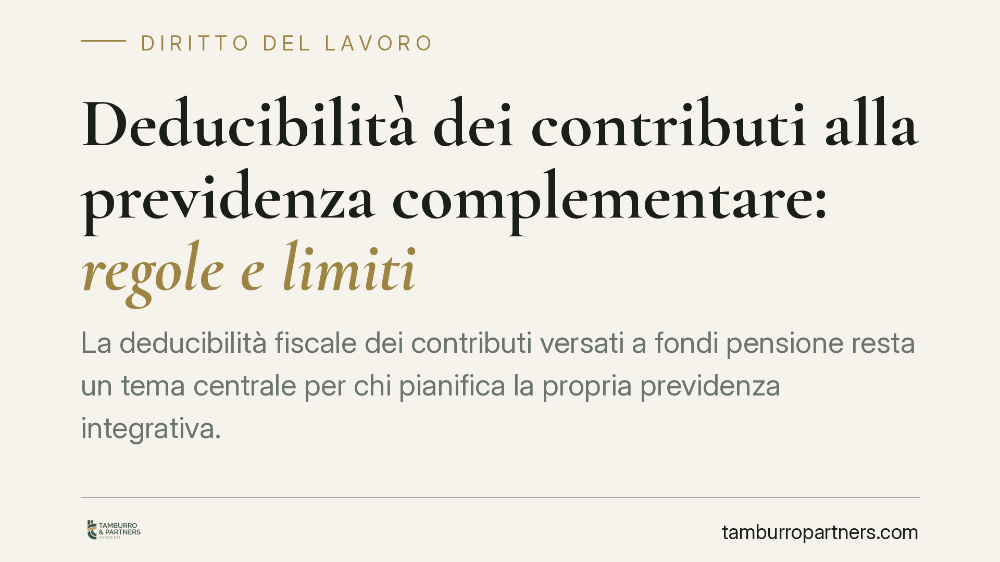
Deducibilità dei contributi alla previdenza complementare: regole e limiti
La deducibilità fiscale dei contributi versati a fondi pensione resta un tema centrale per chi pianifica la propria previdenza integrativa. Sul punto circolano notizie di un possib…
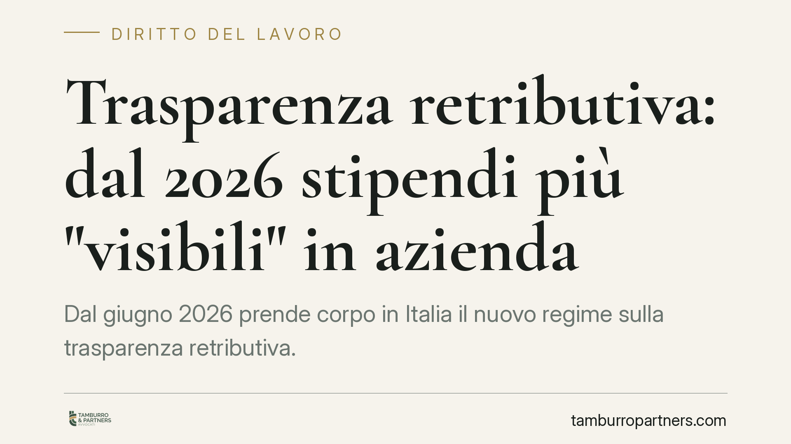
Trasparenza retributiva: dal 2026 stipendi più "visibili" in azienda
Dal giugno 2026 prende corpo in Italia il nuovo regime sulla trasparenza retributiva. Le imprese dovranno fornire informazioni più dettagliate su livelli salariali e criteri di pro…
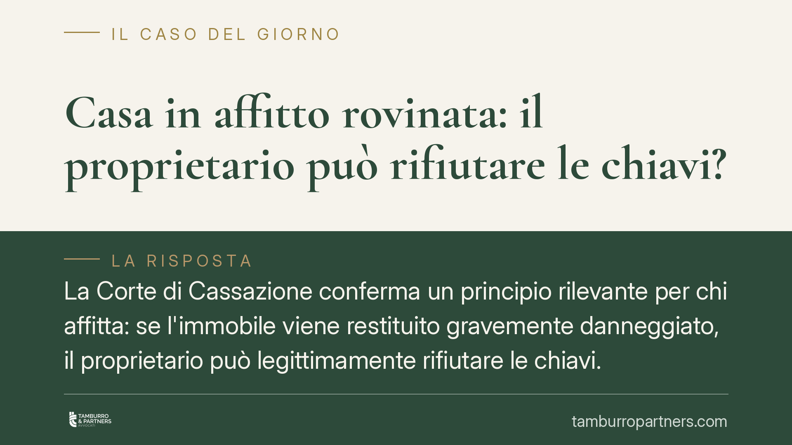
Casa in affitto rovinata: il proprietario può rifiutare le chiavi?
La Corte di Cassazione conferma un principio rilevante per chi affitta: se l'immobile viene restituito gravemente danneggiato, il proprietario può legittimamente rifiutare le chiav…
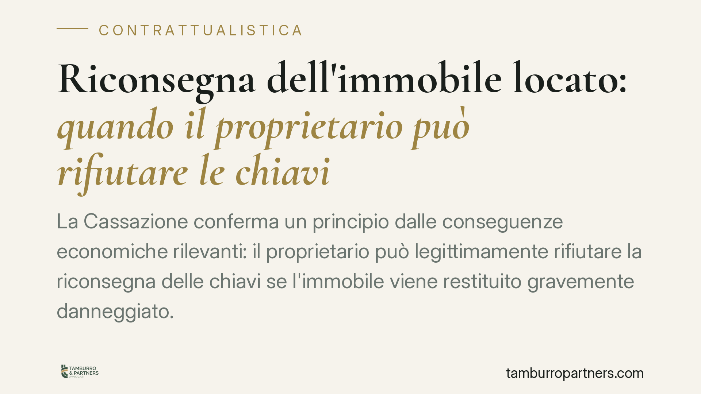
Riconsegna dell'immobile locato: quando il proprietario può rifiutare le chiavi
La Cassazione conferma un principio dalle conseguenze economiche rilevanti: il proprietario può legittimamente rifiutare la riconsegna delle chiavi se l'immobile viene restituito g…
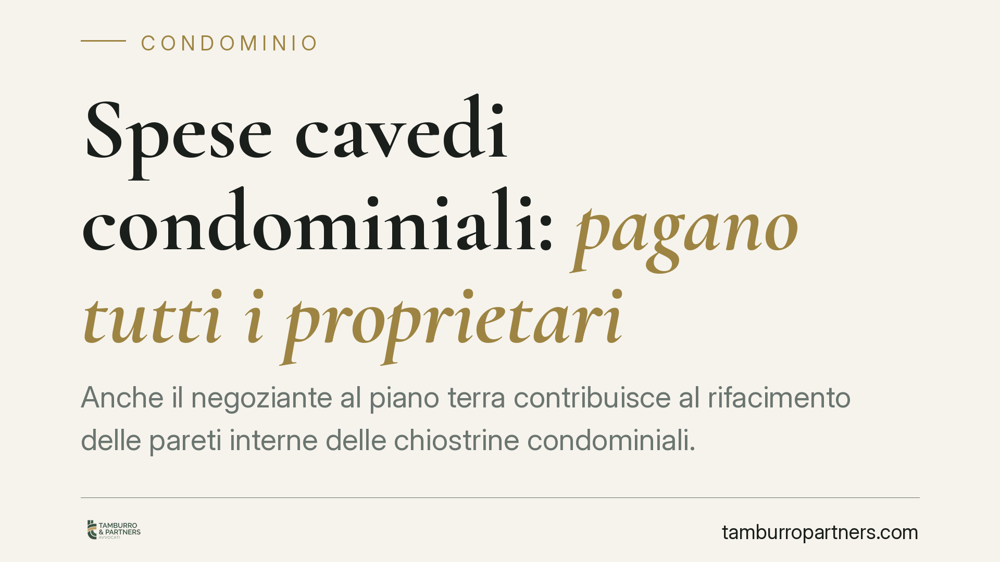
Spese cavedi condominiali: pagano tutti i proprietari
Anche il negoziante al piano terra contribuisce al rifacimento delle pareti interne delle chiostrine condominiali. Lo conferma un orientamento consolidato della Cassazione, che ric…
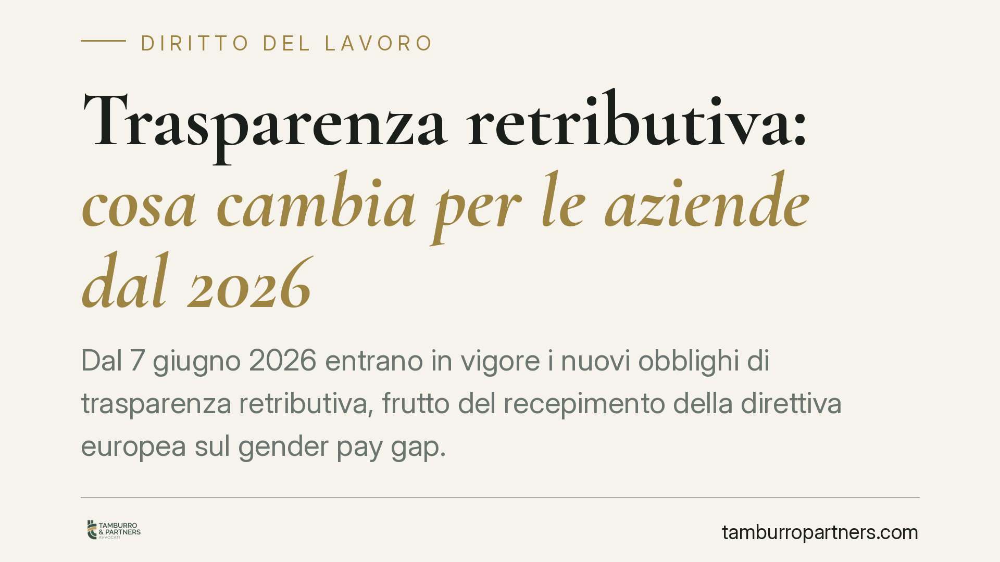
Trasparenza retributiva: cosa cambia per le aziende dal 2026
Dal 7 giugno 2026 entrano in vigore i nuovi obblighi di trasparenza retributiva, frutto del recepimento della direttiva europea sul gender pay gap. Le imprese dovranno rendere acce…
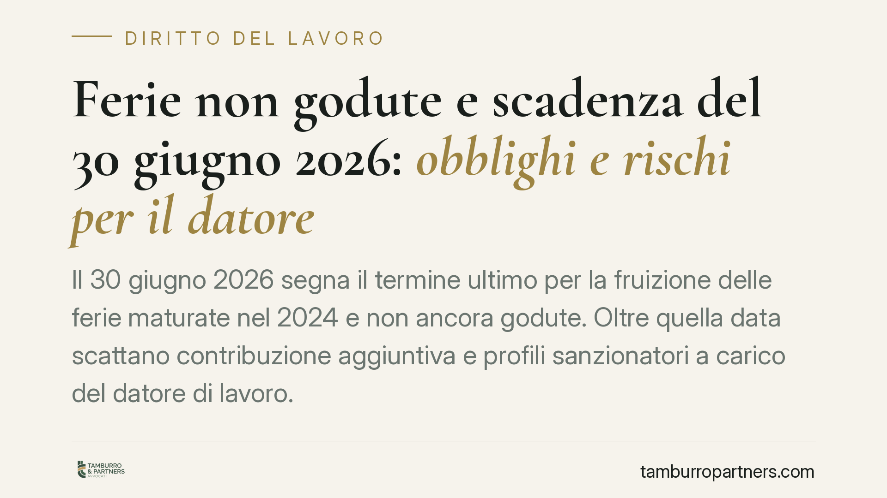
Ferie non godute e scadenza del 30 giugno 2026: obblighi e rischi per il datore
Il 30 giugno 2026 segna il termine ultimo per la fruizione delle ferie maturate nel 2024 e non ancora godute. Oltre quella data scattano contribuzione aggiuntiva e profili sanziona…
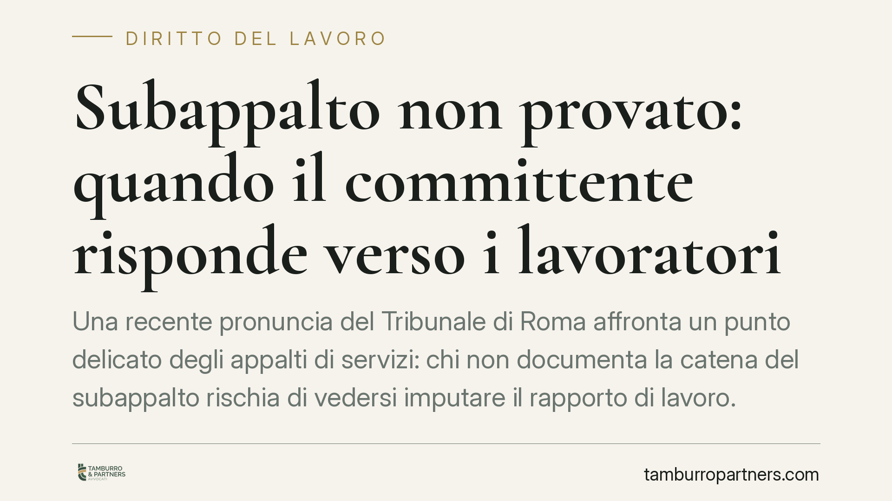
Subappalto non provato: quando il committente risponde verso i lavoratori
Una recente pronuncia del Tribunale di Roma affronta un punto delicato degli appalti di servizi: chi non documenta la catena del subappalto rischia di vedersi imputare il rapporto …
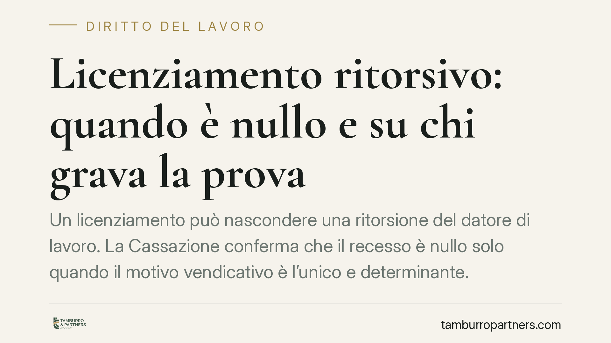
Licenziamento ritorsivo: quando è nullo e su chi grava la prova
Un licenziamento può nascondere una ritorsione del datore di lavoro. La Cassazione conferma che il recesso è nullo solo quando il motivo vendicativo è l'unico e determinante. La pr…

Licenziamento ritorsivo: quando è nullo e come si prova
Il licenziamento per ritorsione è nullo, ma solo a condizioni precise. La Cassazione richiede che l'intento di rappresaglia sia il motivo determinante ed esclusivo del recesso, e p…
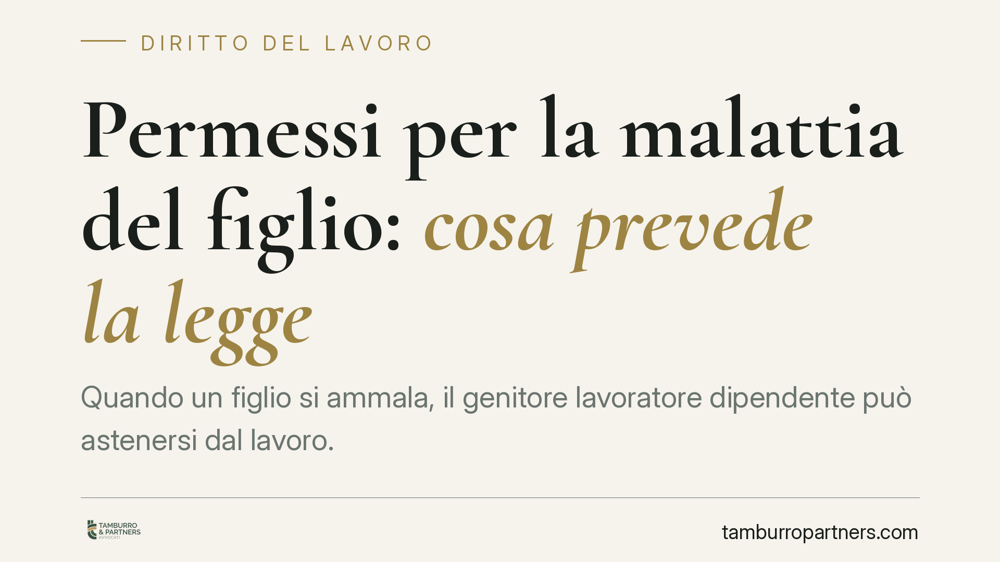
Permessi per la malattia del figlio: cosa prevede la legge
Quando un figlio si ammala, il genitore lavoratore dipendente può astenersi dal lavoro. La legge distingue però in base all'età del bambino: sotto i tre anni l'assenza è illimitata…
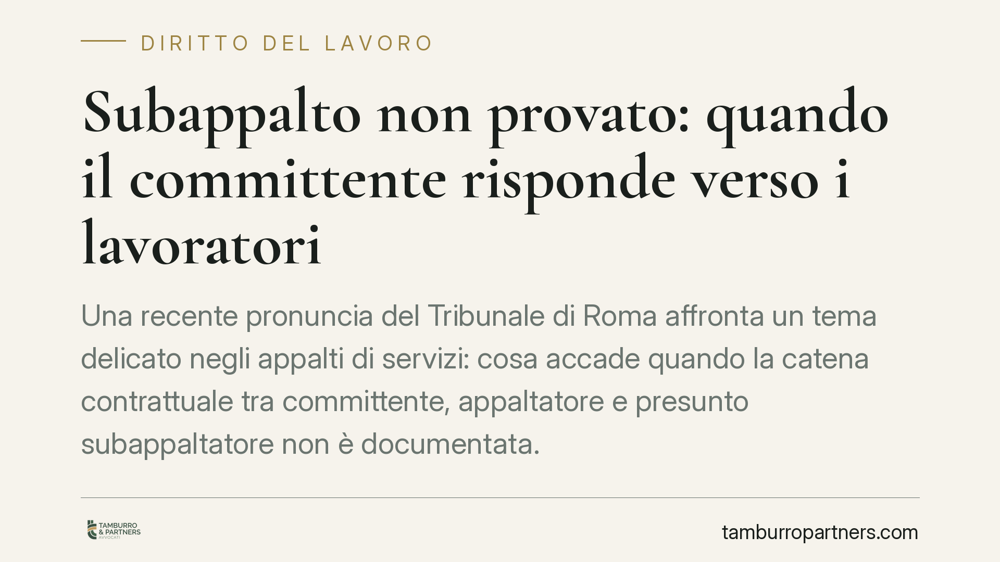
Subappalto non provato: quando il committente risponde verso i lavoratori
Una recente pronuncia del Tribunale di Roma affronta un tema delicato negli appalti di servizi: cosa accade quando la catena contrattuale tra committente, appaltatore e presunto su…
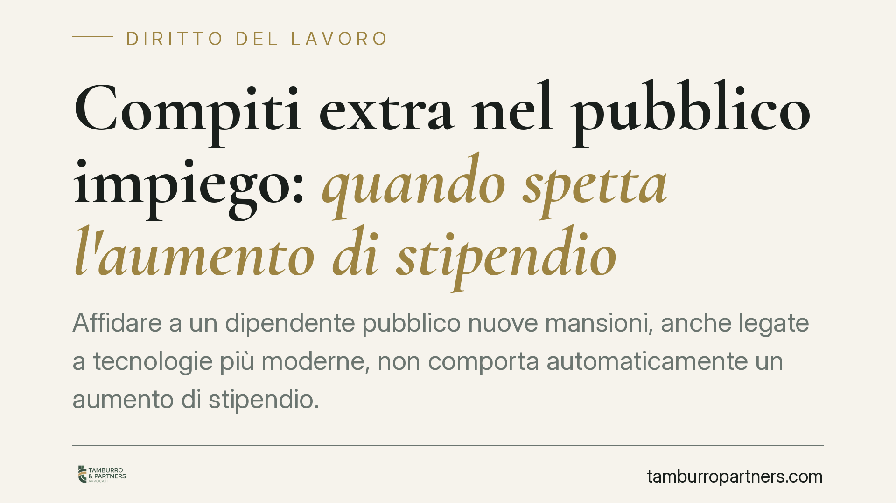
Compiti extra nel pubblico impiego: quando spetta l'aumento di stipendio
Affidare a un dipendente pubblico nuove mansioni, anche legate a tecnologie più moderne, non comporta automaticamente un aumento di stipendio. Lo ha ribadito la Cassazione: il comp…
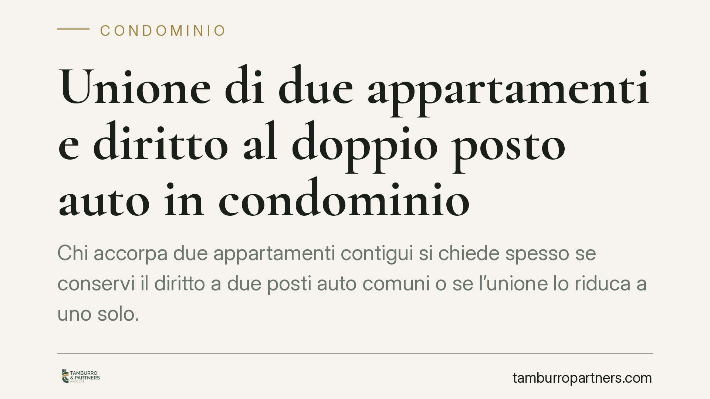
Unione di due appartamenti e diritto al doppio posto auto in condominio
Chi accorpa due appartamenti contigui si chiede spesso se conservi il diritto a due posti auto comuni o se l'unione lo riduca a uno solo. Una pronuncia di merito del Tribunale di V…
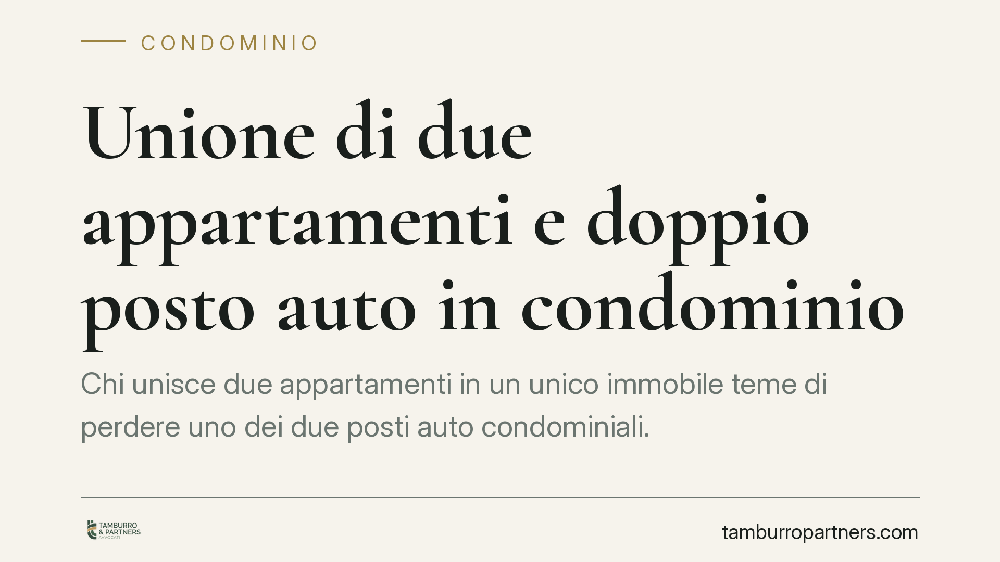
Unione di due appartamenti e doppio posto auto in condominio
Chi unisce due appartamenti in un unico immobile teme di perdere uno dei due posti auto condominiali. Un orientamento di merito ha escluso questa decurtazione, ancorando il diritto…
Congedo straordinario Legge 104: i nuovi massimali INPS e i costi nascosti dell'assenza
L'INPS ha aggiornato i massimali del congedo straordinario previsto dalla Legge 104/1992: il tetto annuo è ora 57.837 euro, distinto tra indennità e contribuzione figurativa. Ma ch…
Congedo straordinario Legge 104: nuovi massimali INPS e i costi dell'assenza
L'INPS ha aggiornato il massimale annuo per il congedo straordinario previsto dalla Legge 104/1992, fissandolo a 57.837 euro tra indennità e contribuzione figurativa. Una buona not…
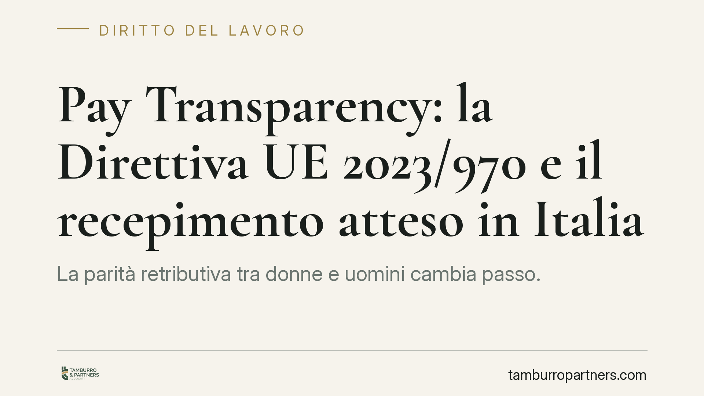
Pay Transparency: la Direttiva UE 2023/970 e il recepimento atteso in Italia
La parità retributiva tra donne e uomini cambia passo. La Direttiva UE 2023/970 sulla trasparenza salariale impone alle imprese nuovi obblighi informativi e di reporting, con termi…
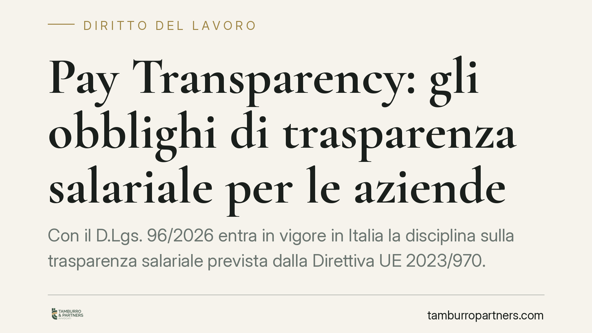
Pay Transparency: gli obblighi di trasparenza salariale per le aziende
Con il D.Lgs. 96/2026 entra in vigore in Italia la disciplina sulla trasparenza salariale prevista dalla Direttiva UE 2023/970. Le aziende dovranno rendere conoscibili i criteri re…
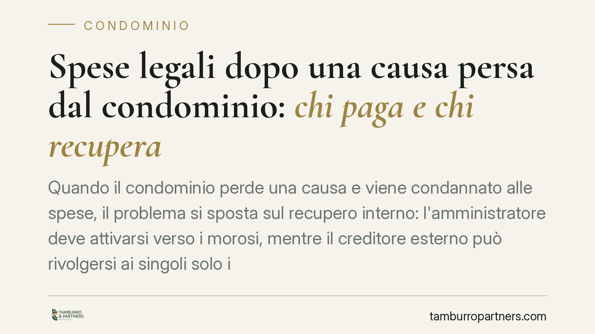
Spese legali dopo una causa persa dal condominio: chi paga e chi recupera
Quando il condominio perde una causa e viene condannato alle spese, il problema si sposta sul recupero interno: l'amministratore deve attivarsi verso i morosi, mentre il creditore …

Spese legali dopo una causa persa dal condominio: chi le recupera dai morosi
Quando il condominio perde una causa, il giudice condanna l'ente a pagare le spese legali della controparte. Ma se uno o più condòmini non versano la propria quota, chi recupera qu…
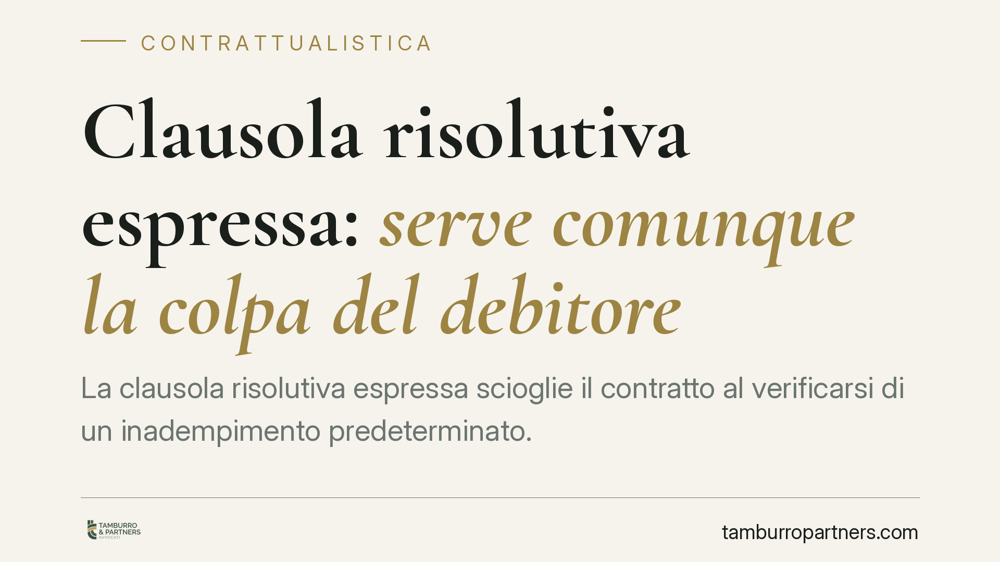
Clausola risolutiva espressa: serve comunque la colpa del debitore
La clausola risolutiva espressa scioglie il contratto al verificarsi di un inadempimento predeterminato. Ma una recente pronuncia del Tribunale di Genova (14 maggio 2026) ricorda c…
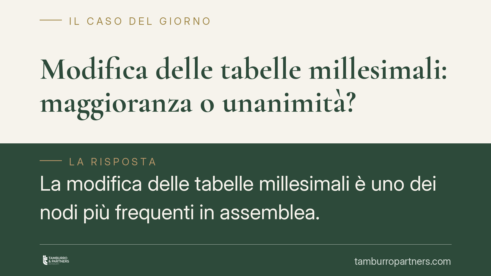
Modifica delle tabelle millesimali: maggioranza o unanimità?
La modifica delle tabelle millesimali è uno dei nodi più frequenti in assemblea. La Cassazione distingue tra semplice aggiornamento tecnico, che richiede la maggioranza, e introduz…
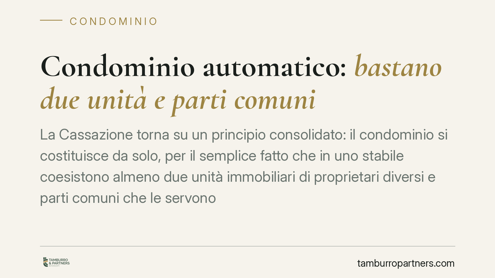
Condominio automatico: bastano due immobili e parti comuni
La Cassazione torna sul cosiddetto condominio minimo: bastano due unità immobiliari appartenenti a proprietari diversi e l'esistenza di parti comuni funzionali perché il condominio…
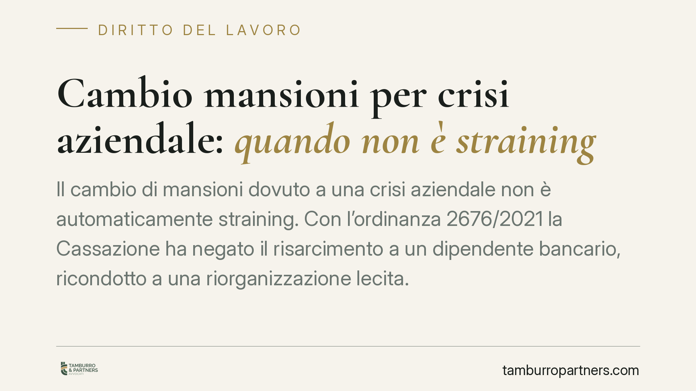
Cambio mansioni per crisi aziendale: quando non è straining
Il cambio di mansioni dovuto a una crisi aziendale non è automaticamente straining. Con l'ordinanza 2676/2021 la Cassazione ha negato il risarcimento a un dipendente bancario, rico…
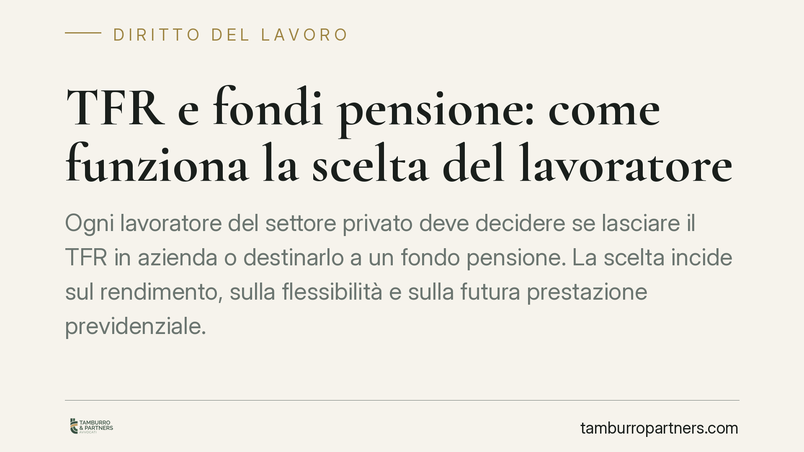
TFR e fondi pensione: come funziona la scelta del lavoratore
Ogni lavoratore del settore privato deve decidere se lasciare il TFR in azienda o destinarlo a un fondo pensione. La scelta incide sul rendimento, sulla flessibilità e sulla futura…
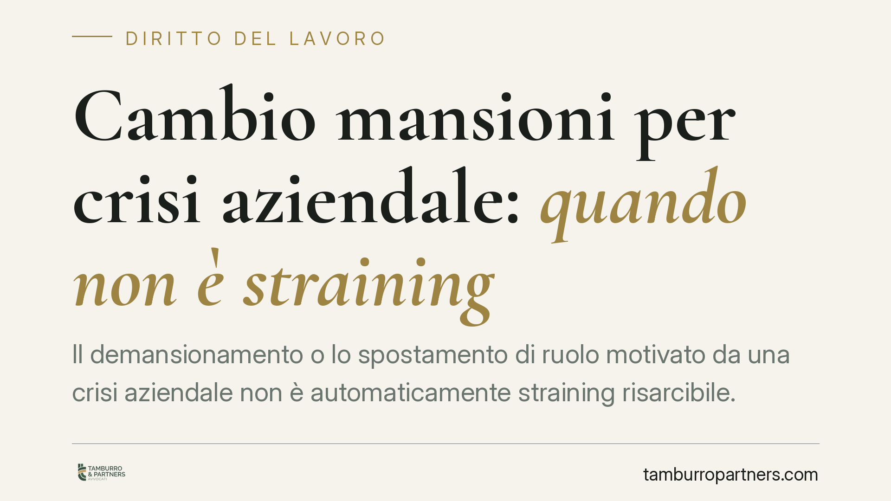
Cambio mansioni per crisi aziendale: quando non è straining
Il demansionamento o lo spostamento di ruolo motivato da una crisi aziendale non è automaticamente straining risarcibile. Con l'ordinanza 2676/2021 la Cassazione distingue le scelt…
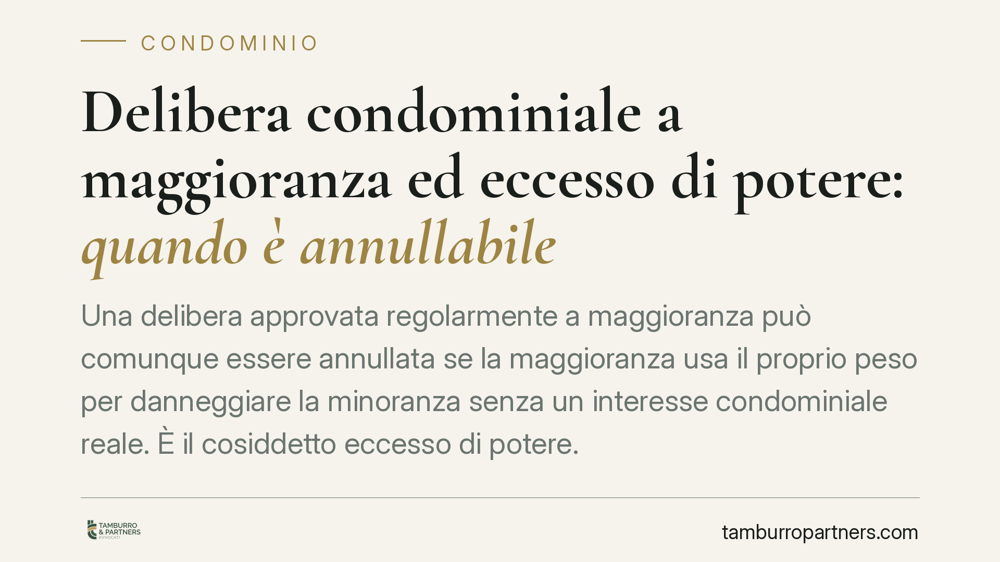
Delibera condominiale a maggioranza ed eccesso di potere: quando è annullabile
Una delibera approvata regolarmente a maggioranza può comunque essere annullata se la maggioranza usa il proprio peso per danneggiare la minoranza senza un interesse condominiale r…
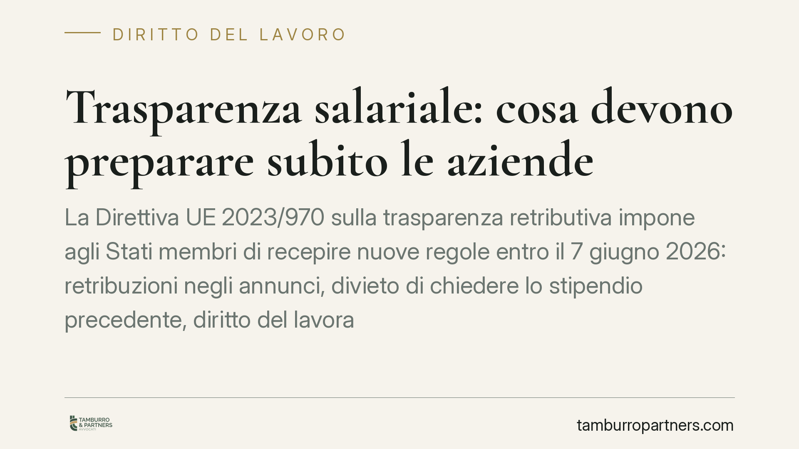
Trasparenza salariale: cosa devono preparare subito le aziende
La Direttiva UE 2023/970 sulla trasparenza retributiva impone agli Stati membri di recepire nuove regole entro il 7 giugno 2026: retribuzioni negli annunci, divieto di chiedere lo …
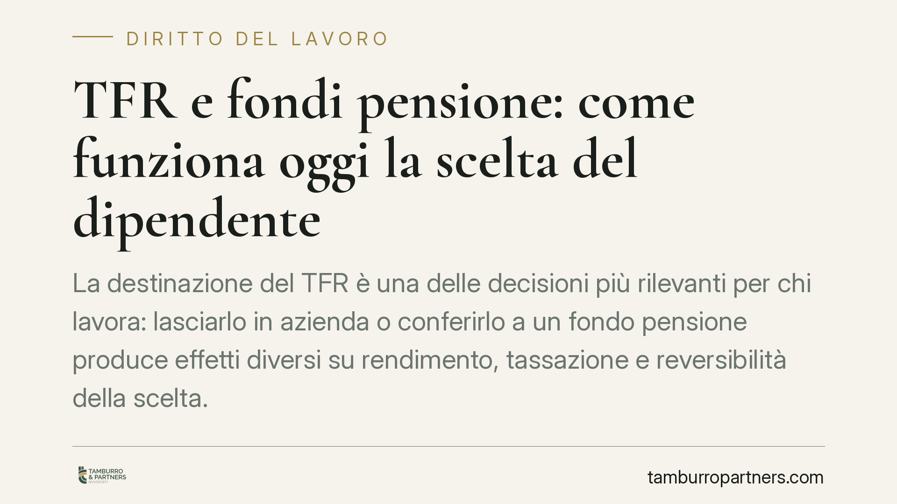
TFR e fondi pensione: come funziona oggi la scelta del dipendente
La destinazione del TFR è una delle decisioni più rilevanti per chi lavora: lasciarlo in azienda o conferirlo a un fondo pensione produce effetti diversi su rendimento, tassazione …
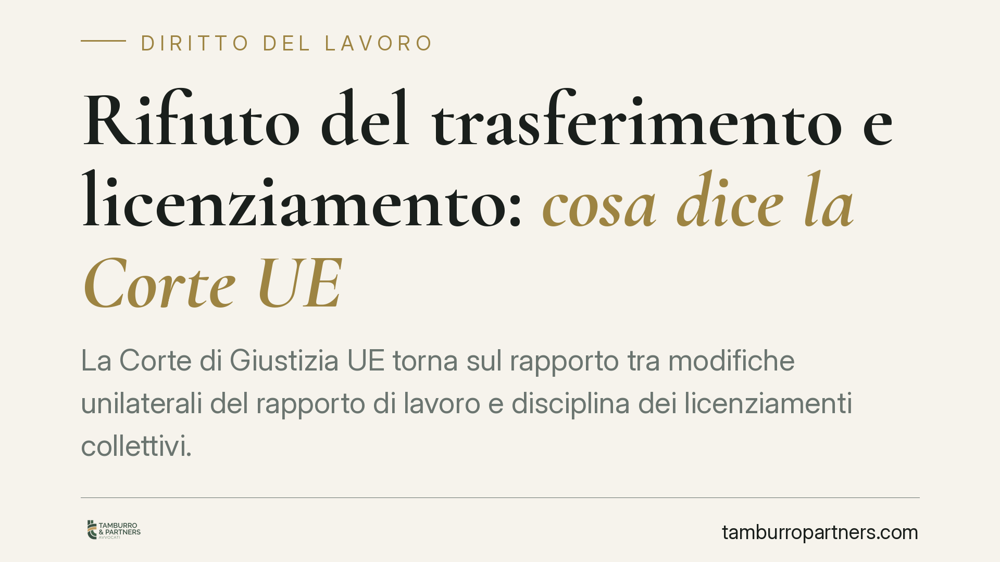
Rifiuto del trasferimento e licenziamento: cosa dice la Corte UE
La Corte di Giustizia UE torna sul rapporto tra modifiche unilaterali del rapporto di lavoro e disciplina dei licenziamenti collettivi. Quando il recesso segue il rifiuto del lavor…
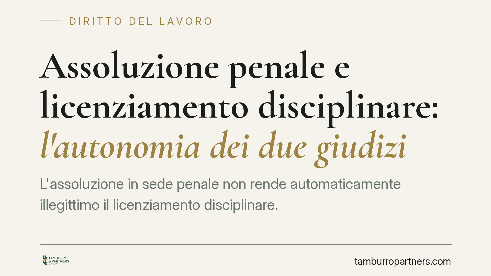
Assoluzione penale e licenziamento disciplinare: l'autonomia dei due giudizi
L'assoluzione in sede penale non rende automaticamente illegittimo il licenziamento disciplinare. La Corte di Cassazione ribadisce che i due giudizi viaggiano su binari distinti: i…
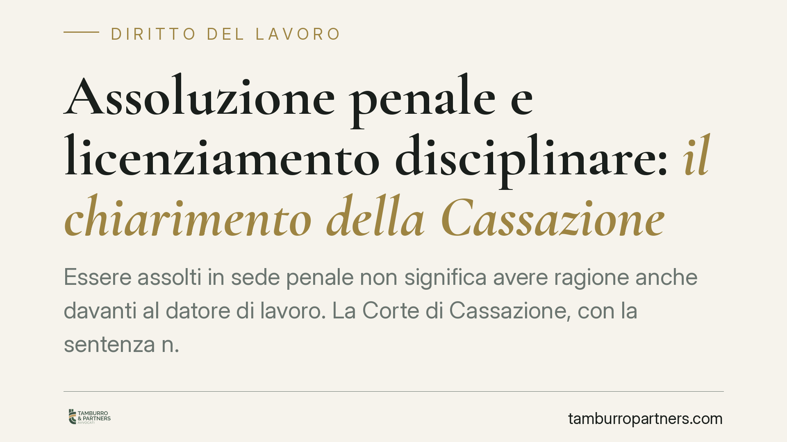
Assoluzione penale e licenziamento disciplinare: il chiarimento della Cassazione
Essere assolti in sede penale non significa avere ragione anche davanti al datore di lavoro. La Corte di Cassazione, con la sentenza n. 3659/2021, ha ribadito che il licenziamento …
Periodo di prova impiegati: 3 o 6 mesi? Il nodo tra Regio Decreto e Trasparenza
Quanti mesi di prova si possono pattuire per un impiegato? La domanda sembra banale, ma cela un conflitto tra una norma del 1924 che fissa il limite a tre mesi e una disciplina rec…
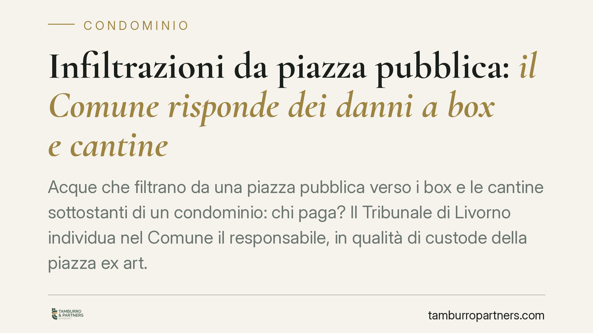
Infiltrazioni da piazza pubblica: il Comune risponde dei danni a box e cantine
Acque che filtrano da una piazza pubblica verso i box e le cantine sottostanti di un condominio: chi paga? Il Tribunale di Livorno individua nel Comune il responsabile, in qualità …
Canna fumaria in facciata: quando non lede il decoro architettonico
Una canna fumaria installata sulla facciata condominiale non è di per sé vietata. La Corte d'Appello di Torino ha precisato che, quando il prospetto è già alterato da condizionator…
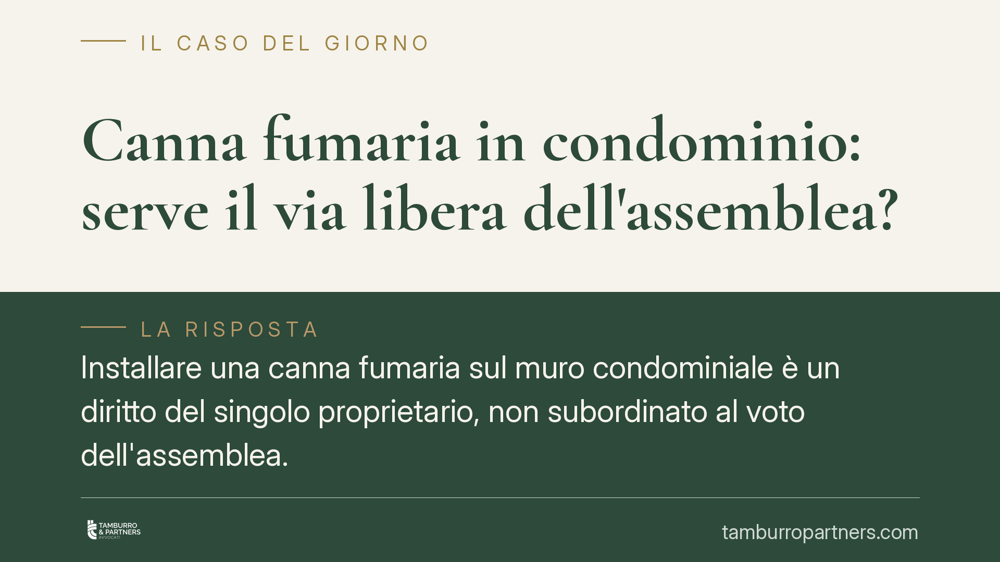
Canna fumaria in condominio: serve davvero il via libera dell'assemblea?
Chi vuole installare una canna fumaria sulla facciata condominiale spesso teme di dover passare dall'assemblea. In realtà la legge consente al singolo condomino di usare le parti c…
Mutuo a tasso fisso o variabile: la scelta e la leva della surroga
La scelta tra mutuo a tasso fisso e variabile non è solo questione di numeri: è una decisione contrattuale che vincola il debitore per decenni. In un quadro di possibili oscillazio…
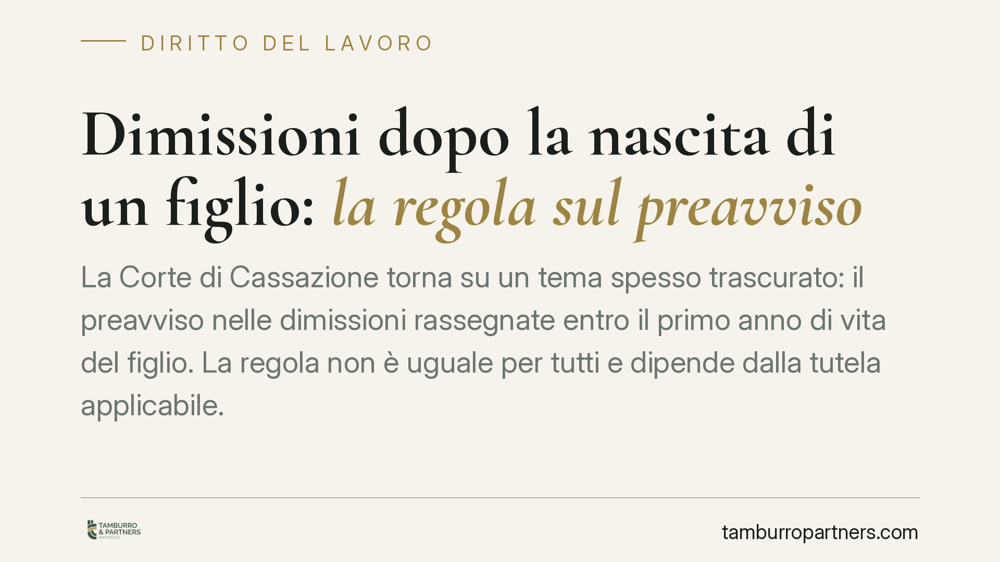
Dimissioni dopo la nascita di un figlio: la regola sul preavviso
La Corte di Cassazione torna su un tema spesso trascurato: il preavviso nelle dimissioni rassegnate entro il primo anno di vita del figlio. La regola non è uguale per tutti e dipen…
Lavoro del richiedente asilo: i tempi di accesso all'occupazione
Quando può iniziare a lavorare in Italia chi ha presentato domanda di protezione internazionale? La regola vigente fissa un'attesa di sessanta giorni dalla domanda. Si discute di u…
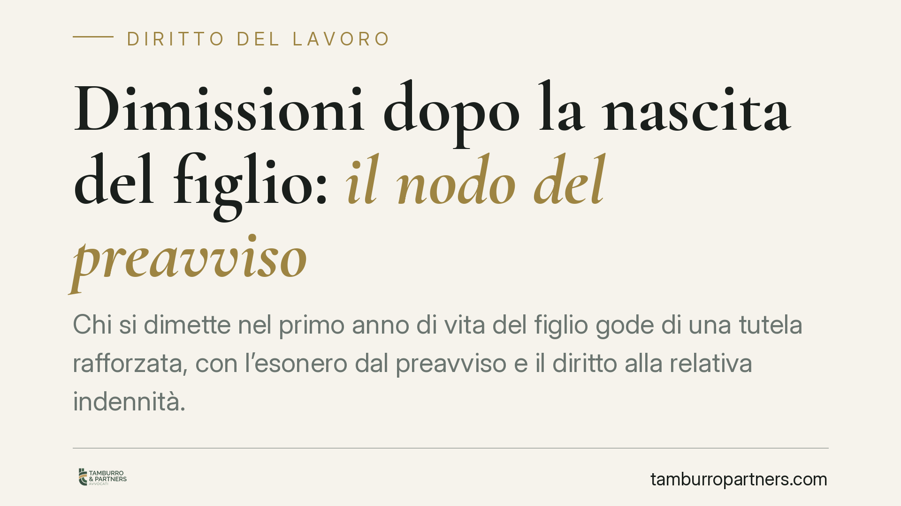
Dimissioni dopo la nascita del figlio: il nodo del preavviso
Chi si dimette nel primo anno di vita del figlio gode di una tutela rafforzata, con l'esonero dal preavviso e il diritto alla relativa indennità. La Cassazione ha però chiarito che…
Accesso al lavoro del richiedente asilo: cambiano i tempi di attesa
Si discute di una riduzione dei tempi di accesso al lavoro per i richiedenti protezione internazionale in Italia. Oggi la soglia è di sessanta giorni dalla domanda; l'orientamento …
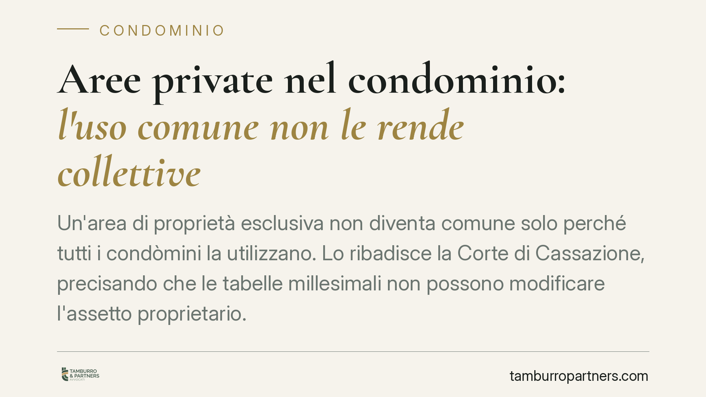
Aree private nel condominio: l'uso comune non le rende collettive
Un'area di proprietà esclusiva non diventa comune solo perché tutti i condòmini la utilizzano. Lo ribadisce la Corte di Cassazione, precisando che le tabelle millesimali non posson…
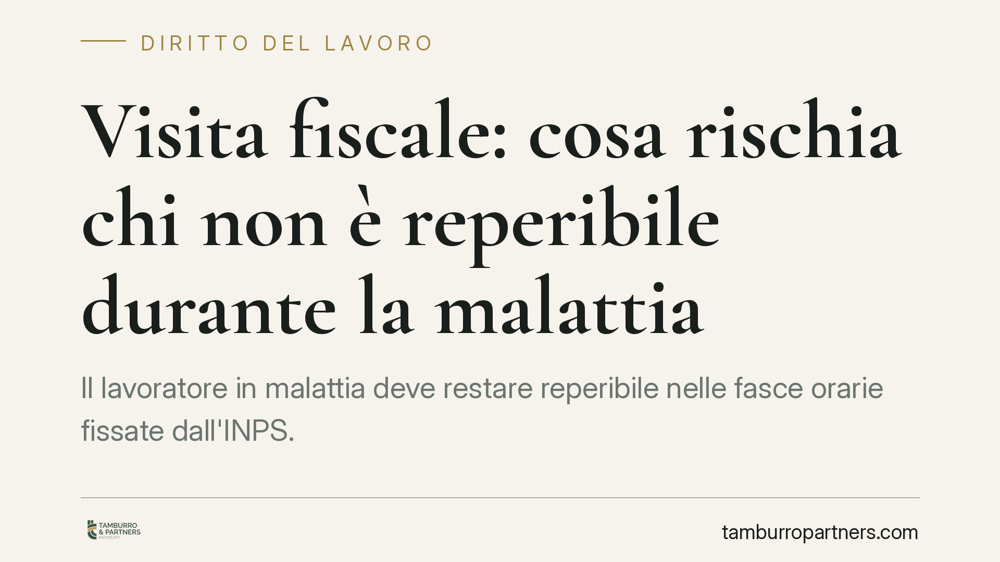
Visita fiscale: cosa rischia chi non è reperibile durante la malattia
Il lavoratore in malattia deve restare reperibile nelle fasce orarie fissate dall'INPS. Chi non viene trovato dal medico fiscale rischia la decurtazione o la perdita dell'indennità…
Visita fiscale e assenza del lavoratore: cosa si rischia
Il lavoratore in malattia deve restare reperibile nelle fasce orarie fissate per i controlli medici. L'assenza ingiustificata durante la visita fiscale espone a perdita dell'indenn…
Aree private nel condominio: l'uso comune non cambia la proprietà
La Corte di Cassazione ribadisce un principio destinato a incidere su molti contenziosi condominiali: il fatto che tutti i condòmini utilizzino un'area di proprietà esclusiva non n…
APE sociale dopo le proroghe: chi può accedere
L'APE sociale resta uno strumento di accompagnamento alla pensione per chi si trova in condizioni di particolare difficoltà. Le proroghe normative hanno tenuto in vita la misura, m…
Lavoro di pari valore: i criteri per la trasparenza retributiva
Dal 7 giugno 2026 il D.Lgs. 96/2026 introduce il concetto di 'lavoro di pari valore' come parametro per la trasparenza retributiva. Le aziende dovranno adottare criteri oggettivi e…
Visita fiscale e assenza: quando scatta il licenziamento
L'assenza alla visita fiscale di controllo non produce sempre le stesse conseguenze. Una mancanza occasionale e giustificata incide di norma sul piano economico; la recidiva può in…
Trasparenza retributiva: i dipendenti possono chiedere quanto guadagnano i colleghi
Il D.Lgs. 96/2026, che recepisce la Direttiva UE 2023/970, riconosce ai lavoratori il diritto di chiedere informazioni sui livelli retributivi medi, disaggregati per categoria e se…
NASpI anticipata e apertura di partita IVA: regole e cautele per il 2026
Chi perde il lavoro e vuole avviare un'attività autonoma può chiedere la NASpI in un'unica soluzione anziché a rate mensili. È una leva utile, ma la scelta è irreversibile e va pon…
TFR non pagato dal datore: diritti del lavoratore e tutele
Alla fine del rapporto di lavoro spetta il Trattamento di Fine Rapporto. Quando il datore ritarda o non paga, il lavoratore non resta privo di tutele: la legge prevede interessi, r…
APE sociale 2026: chi ha diritto e con quali requisiti
L'APE sociale resta uno strumento di accompagnamento alla pensione per chi versa in condizioni di fragilità: disoccupati, caregiver, invalidi e addetti a mansioni gravose. Con l'at…
Trasparenza retributiva: i dipendenti possono sapere quanto guadagnano i colleghi?
Il recepimento della Direttiva UE 2023/970 sulla trasparenza retributiva riconosce ai lavoratori il diritto di ottenere informazioni sui livelli retributivi medi, ripartiti per cat…
Lavoro straordinario: come si prova in giudizio e a chi spetta l'onere
Provare le ore di lavoro straordinario è spesso il vero terreno di scontro nelle cause di lavoro. Tra la regola generale dell'art. 2697 c.c. e la sentenza della Corte di Giustizia …
Buoni pasto e tassazione: le soglie di esenzione tra cartaceo ed elettronico
I buoni pasto godono di un trattamento fiscale agevolato, ma la soglia di esenzione cambia a seconda del formato: 8 euro per l'elettronico, 4 euro per il cartaceo. Si discute di un…
Influencer e redditi dai social: gli obblighi fiscali, previdenziali e di qualificazione del rapporto
Con la Direttiva DAC7 il Fisco riceve dalle piattaforme i dati sui compensi di creator e influencer. Per chi produce reddito dai social cambia molto: oltre agli obblighi dichiarati…
TFR non pagato: diritti del lavoratore e tutele
Il TFR matura ogni anno ma diventa esigibile solo alla fine del rapporto. Quando il datore non paga, il lavoratore dispone di strumenti precisi: diffida, decreto ingiuntivo, esecuz…
Buoni pasto da 10 euro: quando sono esentasse?
Un buono pasto da 10 euro non è automaticamente esentasse. Il regime fiscale cambia in base al formato: elettronico o cartaceo. Capire dove cade la soglia di esenzione evita errori…
Lavoro straordinario in giudizio: prova e onere probatorio
Provare le ore di straordinario in giudizio resta uno dei punti più delicati del contenzioso di lavoro. La regola è chiara: chi chiede il pagamento deve dimostrarlo. Ma la giurispr…
NASpI anticipata e apertura di partita IVA: regole e cautele
Chi perde il lavoro e vuole avviare un'attività autonoma può chiedere l'anticipo in un'unica soluzione della NASpI. È uno strumento utile, ma rigido: termini stretti, condizioni di…
Redditi da social: obblighi fiscali e contributivi per creator e influencer
L'Agenzia delle Entrate e la Guardia di Finanza incrociano dati internazionali per intercettare i redditi prodotti sui social. Grazie alla direttiva DAC7 le piattaforme comunicano …
Visita fiscale e assenza: quando scatta il licenziamento
L'assenza alla visita fiscale di controllo non comporta sempre le stesse conseguenze. Una cosa è la trattenuta economica sull'indennità di malattia, altra è la sanzione disciplinar…
Lavoro di pari valore: i criteri di comparazione salariale
Dal 7 giugno 2026 il D.Lgs. 96/2026 introduce nell'ordinamento il concetto di 'lavoro di pari valore', strumento centrale per la trasparenza retributiva e la parità di genere. Le a…
Lite temeraria in condominio: quando proseguire una causa senza interesse costa cara
Un condomino che insiste in giudizio senza un reale interesse può essere condannato per lite temeraria. Lo ribadisce una pronuncia del Tribunale di Taranto, che applica l'art. 96 c…
Finta partita IVA o lavoro subordinato: come si prova la dipendenza
Dietro una partita IVA può nascondersi un rapporto di lavoro subordinato. Conta la realtà concreta dell'esecuzione, non l'etichetta del contratto. Ma è il lavoratore a dover provar…
Lite temeraria in condominio: quando proseguire la causa costa caro
Il Tribunale di Taranto ha condannato un condomino per lite temeraria dopo aver proseguito un giudizio privo di interesse concreto. La decisione richiama l'art. 96 c.p.c. e l'abuso…
Licenziamento per motivi economici e NASpI: requisiti, termini e cosa verificare
Chi perde il lavoro per ragioni economiche, organizzative o produttive ha di norma diritto alla NASpI, l'indennità di disoccupazione gestita dall'INPS. Percepirla, però, non signif…
Balconi e decoro architettonico: i limiti per divisori e tende
Installare un divisorio o una tenda sul balcone per guadagnare privacy è prassi diffusa. Ma quando l'intervento incide sull'estetica dell'edificio o limita aria e luce del vicino, …
Divisori e tende sui balconi: i limiti del decoro architettonico
Installare un divisorio o una tenda sul proprio balcone non è una scelta del tutto libera. Una recente pronuncia del Tribunale di Savona ricorda che anche le opere su parti di prop…
Licenziamento per finta malattia: la difesa del lavoratore
Il licenziamento per finta malattia è una delle contestazioni disciplinari più frequenti. L'azienda accusa il dipendente di simulare l'infermità o di svolgere attività incompatibil…
Licenziamento per motivi economici e diritto alla NASpI: requisiti e regole 2025
Il licenziamento per giustificato motivo oggettivo, legato a ragioni economiche o organizzative dell'impresa, è una cessazione involontaria del rapporto. Per questo apre la strada …
Sgravio tardivo del Fisco: il contribuente ha comunque diritto alle spese legali
Quando l'Agenzia delle Entrate annulla un atto solo dopo l'avvio del contenzioso, deve comunque rimborsare le spese legali al contribuente. La Cassazione ribadisce che lo sgravio t…
Come leggere il bilancio del condominio: guida pratica
Ogni anno l'assemblea approva il rendiconto, ma pochi condomini sanno davvero leggerlo. Eppure quel documento spiega dove finiscono le quote versate e fonda il diritto di contestar…
Fondo morosi in condominio: serve urgenza provata e rimborso certo
La Corte d'Appello di Genova ha annullato una delibera che istituiva un fondo per coprire le morosità altrui, perché priva di due requisiti: l'urgenza dimostrata e un meccanismo ce…
Spese legali tributarie: lo sgravio tardivo non salva il Fisco dalla condanna
Quando il Fisco annulla in autotutela un atto solo dopo l'avvio del contenzioso, deve comunque rifondere le spese legali al contribuente. Lo ribadisce la Cassazione, censurando la …
Come leggere il bilancio del condominio: guida pratica al rendiconto
Il rendiconto condominiale è il documento che ogni condomino ha diritto di comprendere prima di approvarlo in assemblea. Saperlo leggere significa controllare la gestione, verifica…
Fondo morosi in condominio: senza urgenza provata la delibera cade
Una recente pronuncia d'appello ha annullato la delibera con cui un'assemblea aveva istituito un fondo per coprire le quote dei condòmini morosi. Senza urgenza dimostrata e senza m…
Confini immobiliari: prevale l'atto notarile, non il catasto
La Corte di Cassazione ribadisce un principio essenziale: quando si discute dei confini tra due proprietà, prevale ciò che è scritto nell'atto di acquisto, non quanto risulta dalle…
Confini immobiliari: prevale l'atto notarile, non il catasto
Quando due proprietari litigano sul confine, conta più ciò che dice l'atto di compravendita o la mappa catastale? La Cassazione ribadisce un principio consolidato: il titolo notari…
Uso esclusivo dei beni comuni: senza unanimità non si può
Un condomino non può appropriarsi del godimento esclusivo di un bene comune senza il consenso di tutti gli altri. Lo ribadisce la Cassazione con la sentenza n. 20548/2025: la derog…
Uso esclusivo dei beni comuni in condominio: serve l'unanimità
Un condomino può usare in via esclusiva il cortile, il lastrico o un altro bene comune? Solo con il consenso di tutti i condomini. Lo ribadisce la Corte di Cassazione con la senten…
Multiproprietà e regole condominiali: cosa cambia dopo Genova
Una struttura turistica in multiproprietà segue le stesse regole assembleari di un condominio ordinario. Lo afferma il Tribunale di Genova con la sentenza 1889/2025, che applica an…
Vendite simulate in famiglia: come tutelare i diritti dell'erede
Una vendita tra parenti che nasconde una donazione può ridurre il patrimonio destinato agli eredi. Il Tribunale di Catania, con la pronuncia del 14 maggio 2026, torna sul tema dell…
Risarcimento dopo incidente: quando la raccomandata all'assicurazione non serve
Dopo un sinistro stradale il danneggiato deve inviare una richiesta all'assicurazione prima di agire in giudizio. Ma la forma della raccomandata è sempre obbligatoria? La Corte di …
Lavori straordinari in condominio: senza fondo speciale la delibera è nulla
Il Tribunale di Roma ha ribadito un principio rigoroso: l'assemblea che approva lavori straordinari senza costituire il fondo speciale adotta una delibera nulla. Una pronuncia che …
Invalidità: ripristino delle prestazioni senza nuove visite mediche
Con il messaggio 1791 del 28 maggio 2026 l'INPS semplifica il ripristino delle prestazioni assistenziali legate all'invalidità. Chi le ha viste sospese per superamento dei limiti r…
Telecamere in negozio: i limiti del controllo a distanza
La videosorveglianza nei luoghi di lavoro resta uno dei terreni più delicati del diritto del lavoro. La Cassazione ribadisce un principio netto: le telecamere in negozio sono ammes…
Cortile condominiale: quando non puoi escluderlo dalla vendita
Chi compra un appartamento in condominio acquista anche una quota delle parti comuni. Ma il venditore può trattenere per sé il cortile? La Corte di Cassazione, con la sentenza n. 1…
Dimissioni telematiche errate: revoca e annullamento
Una dimissione inviata per errore tramite la procedura telematica non è sempre irreversibile. La legge prevede una revoca entro sette giorni e, in presenza di errore o pressioni, l…
Posto auto riservato al condomino disabile: cosa dice la giurisprudenza
Un condomino con disabilità può ottenere un posto auto riservato nel cortile comune, anche se l'edificio non è del tutto accessibile. Lo conferma la giurisprudenza di merito, che f…
Trasparenza salariale: cosa cambia dal 7 giugno 2026
Dal 7 giugno 2026 entra in vigore il Decreto Legislativo n. 96/2026, che introduce nuovi obblighi di trasparenza retributiva a carico delle aziende. L'obiettivo dichiarato è ridurr…
Codice CCNL in busta paga: la novità del cedolino da maggio 2026
Da maggio 2026 le buste paga riportano un codice identificativo del contratto collettivo applicato. Un dato in apparenza tecnico, ma che incide su retribuzione, inquadramento e tut…
Caporalato e sfruttamento in agricoltura: il quadro delle tutele dopo Amendolara
La morte di quattro lavoratori agricoli ad Amendolara, denunciata da Arci come effetto di un sistema che produce sfruttamento, riporta al centro il tema del lavoro irregolare nei c…
Licenziamento e videoregistrazioni: quando la prova è utilizzabile
La Cassazione civile torna sul rapporto tra controlli a distanza e licenziamento disciplinare, precisando quando le registrazioni video possono fondare un recesso anche in assenza …
Bilancio condominiale poco chiaro: quando la delibera è impugnabile
Un bilancio condominiale poco chiaro non è un dettaglio formale. Quando il rendiconto mescola criteri contabili diversi o manca della nota esplicativa, la delibera di approvazione …
Delibera condominiale nulla se ignora il giudicato
Il Tribunale di Milano, con sentenza del 29 aprile 2026, ha dichiarato nulle le delibere assembleari che tentano di superare una sentenza ormai definitiva. Il principio è netto: l'…
Pensione anticipata e lavori gravosi: cosa cambia con la nuova classificazione ISTAT CP2021
Con il messaggio n. 1808 del 29 maggio 2026 l'INPS aggiorna il quadro per la pensione anticipata dei lavoratori impegnati in attività gravose, allineandolo alla nuova classificazio…
Servizio militare e civile: come accreditare i contributi per la pensione
L'INPS ha pubblicato indicazioni operative per il riconoscimento dei periodi di servizio militare e civile ai fini pensionistici. Si tratta di contributi figurativi che possono inc…
Mediazione obbligatoria in condominio: regole e novità dopo la Riforma Cartabia
Chi intende portare in tribunale una controversia condominiale deve prima tentare la mediazione: è una condizione di procedibilità della domanda. La Riforma Cartabia ha ridisegnato…
Convocazione dell'assemblea condominiale: la mail ordinaria non basta
Una recente pronuncia del Tribunale di Massa torna su un tema concreto: la posta elettronica ordinaria non è idonea a convocare l'assemblea di condominio. Servono forme che diano p…
Riforma della disabilità: chi rischia di perdere i benefici della Legge 104
La riforma della disabilità introduce un nuovo sistema di accertamento della condizione di disabilità. Per chi oggi gode dei benefici della Legge 104/1992, ciò significa possibili …
Part-time e pensione: come incide sui contributi e sull'anzianità
Il lavoro a tempo parziale pone una domanda ricorrente: quanti anni di pensione maturo davvero? La risposta dipende dalla distinzione tra anzianità contributiva e importo dell'asse…
IA e monitoraggio delle emozioni dei dipendenti: l'allerta del Garante Privacy
Il Garante per la protezione dei dati personali ha richiamato l'attenzione sui rischi dell'intelligenza artificiale applicata al rapporto di lavoro, in particolare sui sistemi che …
Invalidità civile: come riavere la prestazione sospesa o revocata
Con il Messaggio n. 1791 del 28 maggio 2026 l'INPS ha rivisto le procedure per il ripristino delle prestazioni economiche legate a invalidità civile, cecità e sordità dopo sospensi…
Risoluzione della compravendita: chi paga le spese del mutuo?
La Cassazione torna sul tema della risoluzione della compravendita per vizi della cosa venduta e affronta una questione spesso trascurata: la sorte delle spese sostenute dall'acqui…
Rateizzazione dei debiti contributivi INPS: cosa cambia con le nuove regole
L'INPS interviene sulla dilazione dei debiti contributivi, estendendo la possibilità di rateizzare gli importi dovuti per chi versa in difficoltà economica. La novità riguarda dato…
Classe energetica falsa nella compravendita: i rimedi per chi compra casa
Un attestato di prestazione energetica non veritiero non è un dettaglio formale. Il Tribunale di Trani, con sentenza del 2022, ha qualificato la classe energetica falsa come vendit…
Esalazioni dal ristorante: anche il proprietario delle mura ne risponde
Le esalazioni di un ristorante che infastidiscono i vicini possono coinvolgere non solo chi gestisce il locale, ma anche chi possiede le mura. La Cassazione lo ha chiarito applican…
Richiami disciplinari e mobbing: dove passa il confine
Ricevere più richiami disciplinari non significa subire mobbing. La Cassazione ribadisce che la reiterazione dei provvedimenti, di per sé, può rientrare nel legittimo esercizio del…
Compenso dell'amministratore di società: quando è dovuto
Chi accetta la carica di amministratore ha diritto a un compenso, anche se l'assemblea non lo ha deliberato in misura precisa. La Cassazione conferma che la presunzione di onerosit…
Dimissioni forzate dal datore di lavoro: quando sono nulle
Nessun datore di lavoro può costringere un dipendente a dimettersi. Le dimissioni rese sotto pressione, minaccia o inganno sono impugnabili e possono essere annullate. Capire quand…
Caparra confirmatoria: non è una tutela automatica
La caparra confirmatoria è spesso percepita come una garanzia che opera da sola al primo ritardo. Non è così. La Cassazione ricorda che recesso, ritenzione o doppio rimborso presup…
Licenziamento illegittimo e ingiurioso: la differenza che incide sul risarcimento
La Cassazione torna su un punto spesso confuso: un licenziamento illegittimo non è automaticamente ingiurioso. Solo modalità offensive o una pubblicità lesiva della dignità giustif…
Composizione negoziata: il nuovo decreto attuativo e gli impatti su imprese ed esperti
È stato pubblicato il decreto attuativo che ridisegna alcuni aspetti della composizione negoziata, lo strumento che consente all'imprenditore in difficoltà di trattare con i credit…
Cadute su scale bagnate: il condominio paga anche se la pulizia è in appalto
Il condominio è custode delle parti comuni ex art. 2051 c.c.: appaltare le pulizie non sposta la responsabilità verso il danneggiato. Solo rivalsa sull'appaltatore.
RUNTS: chiarimenti Modello D 2024 per enti del terzo settore
Il Ministero del Lavoro chiarisce l'uso del Modello D semplificato per gli ETS con entrate inferiori a 220.000 euro.
Licenziamento disciplinare: contestazione specifica e tempestiva
La Cassazione ribadisce: contestazione non specifica = nullità del licenziamento. Implicazioni operative per HR.
Clausole vessatorie B2B: la nuova lettura del Tribunale di Milano
Anche tra imprese, una clausola di limitazione di responsabilità non specificamente approvata può essere abusiva.
Bonus condominiali: ripartizione spese e delibera assembleare
Con il restringimento delle agevolazioni, le assemblee tornano a deliberare nuovi criteri di ripartizione.
5x1000: nuove regole per le ricevute di rendicontazione
L'Agenzia delle Entrate aggiorna lo schema di rendicontazione. Cosa devono fare gli enti beneficiari entro l'anno.
Ispezione INL: come gestire la richiesta documentale
I tempi di risposta, i documenti obbligatori, i margini di interlocuzione. Checklist operativa per HR.